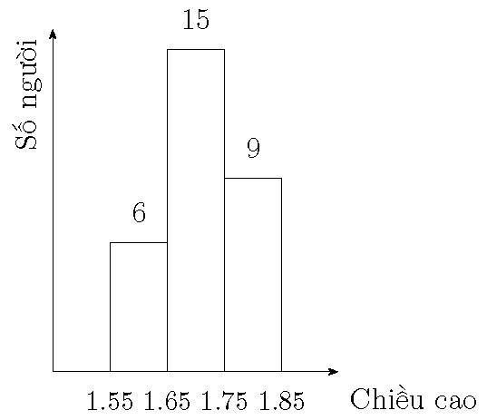

Bài 5.3:
Bảng sau cho số liệu thống kê theo khoảng chiều cao của 30 người trưởng thành
| Chiều cao (m) | 1.55 -- 1.65 | 1.65 -- 1.75 | 1.75 -- 1.85 |
| Số người | 6 | 15 | 9 |
- Vẽ tổ chức đồ của mẫu đã cho.
- Tính xác đặc trưng mẫu \(\overline x, s^2, s, s'^2, s'\).
Đáp số:
-

- \(\overline x = 1.71, {s^2} = 0.0049, s'^2 = 0.005069, s = 0.07, s' = 0.07120\).